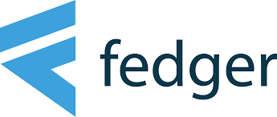

Computer Vision Data Scientist at fedger.io
Additional Description of Tasks
-
Designed and built a custom object-detection CNN (Faster R-CNN with Bayesian Optimization), implementing customized loss functions and anchor generation strategies to achieve ~80% detection accuracy — particularly for clients in the hospitality industry.
Implemented additional contemporary architectures alongside Faster R-CNN, sourced from current research, including Feature Pyramid Network, ensembling of multiple CNN models, and SGD/Adam/Nadam with warm restarts.
Continuously read research papers and proposed new ideas to the AI/Data Science team, analyzing benefits and trade-offs before implementing.
Conducted code reviews to detect bugs in code and logic, optimize for performance and readability, and ensure documentation consistency (Flake8, Pydocstyle, MyPy, PEP8).

- Location: Cologne, Germany
- Start Date: November 2018
- End Date: December 2019
- List of Relevant Technologies Used: Python, GCP Storage, Git, Tensorflow, Keras